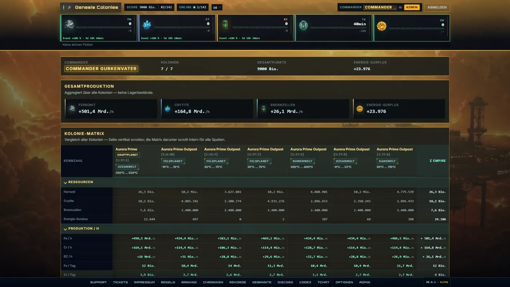

Automated tests
Game rules, transactions and critical edge cases are checked automatically, including concurrent access.
Case Study · Own product

A universe that never sleeps. Genesis Colonies is a persistent browser strategy game with accounts, long-running game state, economy, fleets, research and live operations. The project acts as an engineering benchmark for complex web systems at ABBES Digital.
Development & operations
From the first prototype to a running multi-environment system, the architecture, data model, testing and operations have been extended step by step.
Live in the universe right now
The challenge
A persistent strategy game has no save file and no restart. Construction, research and fleets complete on timers while many players act on the same state at once. Every action has to take effect exactly once: a fleet must not arrive twice, a building must not finish twice, resources must not appear out of nowhere.
Then there is operations: updates without data loss, a database that grows with the game, and tools to steer the live game.
Architecture
The browser only displays. Every rule, every number and every timer is computed on the server and recorded in the database.
HTTP · JSON · WebSocket
Railway
Transactions · row locks · migrations
Solved problems
The game started on SQLite and now runs on PostgreSQL in production. An SQL translation layer lets the same code run on both databases, and dedicated CI jobs check Postgres transactions on every pull request.
A central queue engine completes due construction, research and fleets. Every player action carries a request ID, so a double click or a retried request never triggers anything twice.
Global ticks originally ran inside regular page requests and slowed navigation down. Today a separate worker process does that work, and performance workflows in CI raise the alarm before players notice.
Players sign in centrally on dev.genesis-colonies.com and move from there into isolated universes such as uni1.genesis-colonies.com. Every universe owns its own game state and database; server hand-off uses short-lived, signed tokens. Historical browser addresses remain redirect entry points while API routes deliberately stay stable.
How it is built
Game rules, transactions and critical edge cases are checked automatically, including concurrent access.
Schema changes are versioned and reproducible alongside deployments rather than applied as ad-hoc production edits.
A custom admin tool with an audit log: players, worlds and events are managed in the browser.
German, English, French, Spanish, Polish, Portuguese, Russian and Turkish.
Screens
Click to enlarge.
Your project
From a business website to a custom system, data models, permissions, tests and operations are considered early so a project can grow sensibly later.